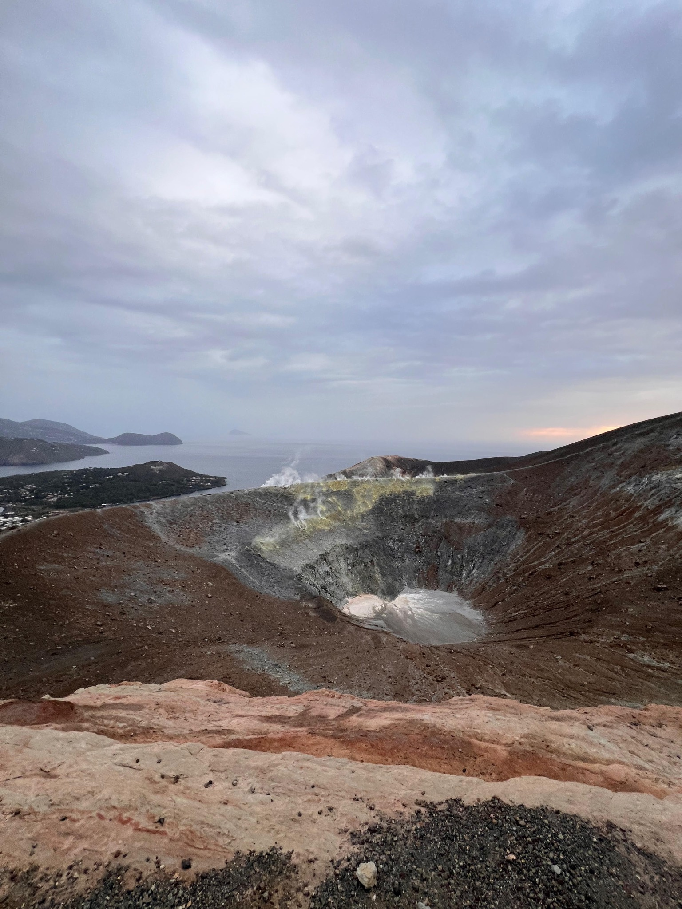
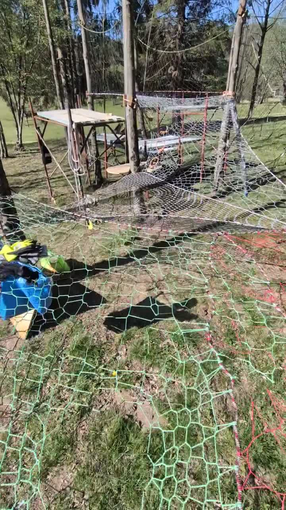

Villa Volpe
Owner & host of the highest-rated luxury villa on Lake Orta — Italy's hidden gem. Where I live the vacation-rental craft first-hand.
villa-volpe.comAlberto Broggi · Trieste, Italy
I turn messy operational data into clean, structured, decision-ready databases.
Data engineering & analysis — databases, dashboards, internal apps and AI automation. I sharpened this craft running the data behind Trieste Villas (120 properties) and Villa Volpe, my own luxury rental on Lake Orta. It was forged in vacation rental — but the same engineering applies to any data-heavy business.

What I do
The core is database enrichment — cleaning, structuring and connecting the data a business runs on. Everything else is built on top of that clean foundation.
Cleaning, structuring, deduplicating and enriching messy data into a single source of truth.
Turning PMS, channel and operational data into dashboards people actually use to decide.
No-code apps with AppSheet & Airtable — operations, housekeeping, check-in and reporting flows.
Websites and internal tools shipped with GitHub, Vercel and Claude Code, plus Apps Script glue.
Agentic AI and internal copilots that remove repetitive work and surface insight on demand.
Pricing strategy, channel mix and OTA performance — the rental know-how behind the data.
Work history
A chronological view of what I've built. Tap any role to open the full story.
The work
The things I build, run and put my name on.
Owner & host of the highest-rated luxury villa on Lake Orta — Italy's hidden gem. Where I live the vacation-rental craft first-hand.
villa-volpe.com
Founder & director of a tour operator running climb-and-sail expeditions across the Mediterranean.
verticalsailingtour.com
Website and booking calendar I built for the event in Custoza.
metronecustoza.com
Web3 booking platform — partner & early investor. Minted the first Booking Hotel NFT in history.
Related: damemalta.comOff the clock
Mountains, wind and water. A few of the things that keep me sane.
Crew on Shockwave3 — Prosecco DOC Maxi Yacht. Read more →

I built a weather page for wingfoilers in Trieste. Open meteo →
Enthusiast and builder. Oxford Blockchain Strategic Program.

Bora days on the Gulf of Trieste.
Certified. Happiest when it's deep and steep.

Climbing and hiking the islands we sail to — here on Marettimo.
Slow craft, knots and trees — nets woven between the pines.
Sourdough, slow rises, wood oven.
Worked with
The teams and brands I've built data, tech and operations for.
Also along the way: Lucca Apartments & Villas · Wengen Apartments · Seably · Barcolana · AJL Atelier · Marina Militare Nastro Rosa Tour · Bluewago.
Contact
Sitting on messy data and need it turned into something you can decide with — in vacation rental or any other business? Write me.
Data & Database Enrichment
I'm back with the company where I cut my teeth in property management — this time on the data side, leading the database layer behind a portfolio of 120 properties.
Digital & Data Consultant · Freelance, full remote
Two leading European vacation rental companies — Lucca Apartments & Villas (300+ units, 20M€+ gross revenue) and Wengen Apartments (80 units, 5M€+ gross revenue) — a combined 380+ managed units. I support both teams on data, tech and automation.
Founder & Director
A tour operator running climb-and-sail expeditions across the Mediterranean — combining mountaineering and sailing into one trip. I founded it and run the whole thing end to end.
Consultant & Tech Specialist
AJL Atelier is a consulting firm focused on the vacation rental and short-term rental industry. I joined as a consultant and tech specialist, working with property managers and operators across multiple markets.
Business Developer
Seably is a B2B SaaS platform for maritime e-learning, serving shipping companies and seafarers worldwide. I wore several hats — business development, data and sponsorship.
Logistic Manager
An itinerant sailing event circumnavigating Italy, with a travelling village that sets up and tears down at each stopover. I ran the logistics of moving that village around the country.
Sports Director
Held every October in the Gulf of Trieste, Barcolana is the largest sailing regatta in the world. As Sports Director I owned the sporting side of an event with thousands of boats on a single start line.
Revenue & Channels Manager
Trieste Villas is a property management company. I led revenue and channel management and coordinated day-to-day rental operations across the portfolio.
Partner Manager
Bluewago is a sailing tour operator. As Partner Manager I built and managed both the supply side — skippers and itineraries — and the demand side — bookings and leads.